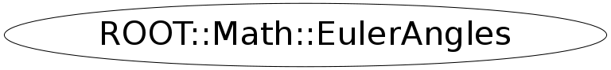

class ROOT::Math::EulerAngles
EulerAngles class describing rotation as three angles (Euler Angles).
The Euler angles definition matches that of Classical Mechanics (Goldstein).
It is also the same convention defined in
<A HREF="http://mathworld.wolfram.com/EulerAngles.html">mathworld</A>
and used in Mathematica and CLHEP. Note that the ROOT class TRotation defines
a slightly different convention.
@ingroup GenVector
Function Members (Methods)
public:
private:
| static double | Pi() |
Class Charts
{kind=link}
{kind=link}
{kind=link}
{kind=link}

Function documentation
EulerAngles(ROOT::Math::EulerAngles::Scalar phi, ROOT::Math::EulerAngles::Scalar theta, ROOT::Math::EulerAngles::Scalar psi)
Constructor from phi, theta and psi
{Rectify();} EulerAngles(IT begin, IT end)
Construct given a pair of pointers or iterators defining the
beginning and end of an array of three Scalars, to be treated as
the angles phi, theta and psi.
{ SetComponents(begin,end); }void Rectify()
The compiler-generated copy ctor, copy assignment, and dtor are OK.
Re-adjust components place angles in canonical ranges
EulerAngles & operator=( OtherRotation const & r )
Assign from any other rotation (see gv_detail::convert )
operator=( RotationZ const & r )
Assign from an axial rotation
{ return operator=(EulerAngles(r)); }void SetComponents(double* begin, double* end)
======== Components ==============
Set the three Euler angles given a pair of pointers or iterators
defining the beginning and end of an array of three Scalars.
void GetComponents(IT begin, IT end)
Get the axis and then the angle into data specified by an iterator begin
and another to the end of the desired data (4 past start).
void GetComponents(double* begin) const
Get the axis and then the angle into data specified by an iterator begin
void SetComponents(ROOT::Math::EulerAngles::Scalar phi, ROOT::Math::EulerAngles::Scalar theta, ROOT::Math::EulerAngles::Scalar psi)
Set the components phi, theta, psi based on three Scalars.
void Invert()
return ! operator==(rhs)
EulerAngles operator*(RotationX const & r1, EulerAngles const & r2)
Multiplication of an axial rotation by an AxisAngle
EulerAngles operator*(RotationY const & r1, EulerAngles const & r2)
EulerAngles operator*(RotationZ const & r1, EulerAngles const & r2)